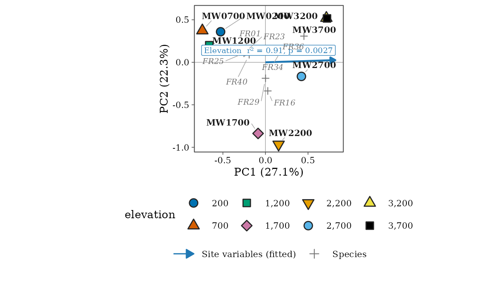

An elevational-gradient workflow
Source:vignettes/elevational-gradient.Rmd
elevational-gradient.RmdA single elevational transect is the most common design in tropical
community ecology: one site per elevation, each surveyed several times.
This article walks through a complete analysis of such a transect with
tidydiversity, using the frogs of Mt Wilhelm, Papua New Guinea
(png_frogs: eight sites from 200 to 3,700 m).
The design decides the statistics
The repeated nights or days at a site are repeat visits to
one site, not replicates of that elevation. The sample
size for any test of an elevational pattern is therefore the number of
sites (here 8), not the number of nights. Treating nights as replicates
inflates the evidence (pseudoreplication; Hurlbert 1984). With so few
sites, permutation tests should enumerate every ordering of the sites
(8! = 40,320) and report exact p-values; tidydiversity does this with
permutations = "exact".
1. Richness along the gradient
Richness is a count, so model it with a Poisson GLM; a quadratic term tests for a mid-elevation peak. Sites without frogs must be kept as zeros.
rich <- div_hill(frogs, abundance = abundance, q = 0) |>
right_join(sites, by = "site") |>
mutate(richness = coalesce(diversity, 0))
peak <- model_count(rich, richness ~ elevation + I(elevation^2))
line <- model_count(rich, richness ~ elevation)
peak
#> Count model ("poisson"); dispersion = 0.413
#>
#> Call: glm(formula = richness ~ elevation + I(elevation^2), family = poisson,
#> data = data)
#>
#> Coefficients:
#> (Intercept) elevation I(elevation^2)
#> 2.210e+00 9.903e-04 -3.635e-07
#>
#> Degrees of Freedom: 7 Total (i.e. Null); 5 Residual
#> Null Deviance: 24.16
#> Residual Deviance: 2.035 AIC: 40.93
anova(line$fit, peak$fit, test = "LRT")
#> Analysis of Deviance Table
#>
#> Model 1: richness ~ elevation
#> Model 2: richness ~ elevation + I(elevation^2)
#> Resid. Df Resid. Dev Df Deviance Pr(>Chi)
#> 1 6 14.1873
#> 2 5 2.0347 1 12.153 0.0004902 ***
#> ---
#> Signif. codes: 0 '***' 0.001 '**' 0.01 '*' 0.05 '.' 0.1 ' ' 1
b <- coef(peak$fit)
-b[["elevation"]] / (2 * b[["I(elevation^2)"]]) # elevation of the peak (m)
#> [1] 1362.282How to read it. The likelihood-ratio test compares a straight line with a curve. The quadratic term is significant, so richness peaks at mid-elevation rather than declining steadily; the fitted peak lies at about 1360 m. The dispersion (Pearson chi-square / df) printed with the model should be near 1; much larger values call for a quasi-Poisson or negative binomial model.
2. Diversity at equal coverage
Raw diversity depends on sampling effort. Standardise every site to
the same sample coverage (Chao and Jost 2012).
level = "min_observed" uses the least complete site as
observed and rarefies the others, the most conservative choice; the
default, "max_extrapolation", is the rule of iNEXT. The
target column reports the level used.
std <- div_standardise(frogs,
abundance = abundance, q = 0:2, nboot = 0,
level = "min_observed"
)
#> Warning: 1 site cannot reach the target coverage: "MW3700".
#> ℹ They are returned at their highest attainable coverage; compare coverage with
#> target, or use `level = "min_observed"`.
std |> select(site, q, target, coverage, diversity)
#> # A tibble: 24 × 5
#> site q target coverage diversity
#> <chr> <int> <dbl> <dbl> <dbl>
#> 1 MW0200 0 0.995 0.995 12.4
#> 2 MW0200 1 0.995 0.995 4.96
#> 3 MW0200 2 0.995 0.995 3.30
#> 4 MW0700 0 0.995 0.995 12.7
#> 5 MW0700 1 0.995 0.995 8.11
#> 6 MW0700 2 0.995 0.995 6.29
#> 7 MW1200 0 0.995 0.995 15.0
#> 8 MW1200 1 0.995 0.995 9.20
#> 9 MW1200 2 0.995 0.995 7.02
#> 10 MW1700 0 0.995 0.995 17.6
#> # ℹ 14 more rowsA site whose coverage curve cannot reach the target (here 3,700 m,
with two species) is returned at its highest attainable coverage with a
warning: compare coverage with target.
3. Composition: ordination with environmental vectors
A PCA of Hellinger-transformed abundances (Legendre and Gallagher
2001) shows the main gradient in composition; elevation is fitted
passively. choices = 1:2 tests it on the two plotted axes,
and permutations = "exact" gives the exact p-value.
pca <- ord_fit(frogs,
abundance = abundance, method = "pca",
formula = ~elevation, permutations = "exact"
)
pca$axes
#> # A tibble: 3 × 4
#> axis name eigenvalue explained
#> <chr> <chr> <dbl> <dbl>
#> 1 axis1 PC1 0.244 0.271
#> 2 axis2 PC2 0.200 0.223
#> 3 axis3 PC3 0.136 0.151
pca$envfit
#> # A tibble: 1 × 7
#> term type r2 p.value axes permutations exact
#> <chr> <chr> <dbl> <dbl> <chr> <dbl> <lgl>
#> 1 elevation vector 0.906 0.00268 1, 2 40319 TRUESites are returned in a fixed order and their environmental values are joined by site name, so the arrows are fitted to the right sites however the data are sorted.
ggplot2::autoplot(pca, colour = elevation, site_labels = TRUE, species = 8)
4. Does composition change with elevation? PERMANOVA
beta_permanova(frogs,
abundance = abundance, formula = ~elevation,
permutations = "exact"
)
#> # A tibble: 3 × 6
#> term df sum_sq r2 statistic p.value
#> <chr> <dbl> <dbl> <dbl> <dbl> <dbl>
#> 1 elevation 1 0.789 0.250 2.00 0.00124
#> 2 Residual 6 2.37 0.750 NA NA
#> 3 Total 7 3.15 1 NA NAElevation explains a quarter of the variation in composition (R2), and the exact p-value comes from all 40,320 orderings of the eight sites.
5. Distance decay: the Mantel test
Pairs of sites share sites, so their dissimilarities are not independent and regression p-values on pairs are invalid. Use a Mantel test.
turn <- beta_dist(beta_pair(frogs), "turnover")
elev <- setNames(sites$elevation, sites$site)
beta_mantel(turn, elev)
#> # A tibble: 1 × 7
#> statistic p.value alternative permutations exact method partial
#> <dbl> <dbl> <chr> <int> <lgl> <chr> <lgl>
#> 1 0.818 0.0003 greater 9999 FALSE spearman FALSEFor a relationship expected to be negative, such as similarity with
distance, use alternative = "less".
6. Turnover or nestedness? Adjacent sites
beta_turnover_counts(frogs, abundance = abundance, order_by = elevation) |>
select(site_1, site_2, shared, lost, gained, sorensen, turnover, nestedness)
#> # A tibble: 7 × 8
#> site_1 site_2 shared lost gained sorensen turnover nestedness
#> <chr> <chr> <int> <int> <int> <dbl> <dbl> <dbl>
#> 1 MW0200 MW0700 7 6 6 0.462 0.462 0
#> 2 MW0700 MW1200 9 4 7 0.379 0.308 0.0716
#> 3 MW1200 MW1700 5 11 13 0.706 0.688 0.0184
#> 4 MW1700 MW2200 6 12 8 0.625 0.571 0.0536
#> 5 MW2200 MW2700 5 9 7 0.615 0.583 0.0321
#> 6 MW2700 MW3200 2 10 2 0.75 0.5 0.25
#> 7 MW3200 MW3700 1 3 1 0.667 0.5 0.167
beta_multi(frogs)
#> # A tibble: 1 × 4
#> n_sites turnover nestedness total
#> <int> <dbl> <dbl> <dbl>
#> 1 8 0.834 0.0473 0.881How to read it. lost and
gained count the species found only below or only above
each step. Sørensen dissimilarity splits into turnover (species
replaced) and nestedness (species lost without replacement; Baselga
2010). Up to 2,700 m almost all change is turnover; the step to 3,200 m
adds nestedness, as the summit fauna is a subset of the species
below.
7. Comparing transects: distance-decay slopes
Is turnover along one transect faster than along another? Compare the slopes with bootstrap intervals that resample sites, not pairs.
decay <- bind_rows(
beta_decay(frogs, elevation) |> mutate(taxon = "frogs"),
beta_decay(filter(png_ants, season == "wet"), elevation) |> mutate(taxon = "ants")
)
beta_decay_boot(decay, group = taxon, nboot = 499, per = 1000, seed = 2026)
#> # A tibble: 3 × 6
#> group slope lower upper n_sites nboot
#> <chr> <dbl> <dbl> <dbl> <int> <int>
#> 1 ants 0.207 0.0854 0.527 5 451
#> 2 frogs 0.154 0.0803 0.385 8 499
#> 3 frogs - ants -0.0530 -0.363 0.181 NA 451Slopes are dissimilarity per 1,000 m. The interval of the difference includes zero, so frogs and ants on Mt Wilhelm turn over at rates that these data cannot tell apart; with five ant sites the intervals are wide.
References
Baselga, A. (2010). Partitioning the turnover and nestedness components of beta diversity. Global Ecology and Biogeography, 19, 134-143.
Chao, A. and Jost, L. (2012). Coverage-based rarefaction and extrapolation. Ecology, 93, 2533-2547.
Hurlbert, S. H. (1984). Pseudoreplication and the design of ecological field experiments. Ecological Monographs, 54, 187-211.
Legendre, P. and Gallagher, E. D. (2001). Ecologically meaningful transformations for ordination of species data. Oecologia, 129, 271-280.